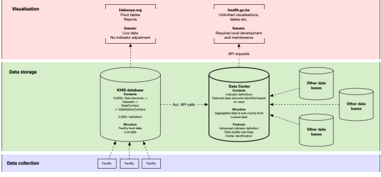
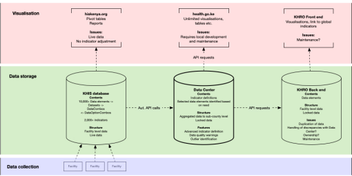

DHIS2 ETL (Microservice)¶
Background¶
The KHIS is the primary system for collection of routine health data in Kenya. All facilities are registered in the system and are obliged to report. Health data is mostly reported as aggregated data every month based on data entry forms. Data is stored on a central server, where it can be accessed via the webpage hiskenya.org. The webpage has different data reporting options and can produce tables and charts.
Discussion¶
The KHIS relies on data reported by facilities. Facilities are requested to report within 2 weeks after the month has ended, but can add, delete and change data at all times. While this is an important feature of a reporting system, it introduces the risk of changing data over time. This is evidenced by different values for the same indicator and period in different reports. Moreover, it makes comparison of current performance with historic performance biased since historic data may be more complete, leading to risk of relative underestimation of current performance. This bias can be mitigated by two different measures : #. Extracting data from DHIS #. Adjusting data based on reporting rates.
Monthly data can be extracted from the KHIS at a specified point in time after the
deadline for facility reporting, and be stored in the MOH Data Centre, which will not be affected by changes to the KHIS.
Data can be adjusted (projected) using an algorithm to compensate for reporting rates
below 100%
Data extraction from the DHIS to MOH Data Centre¶
The KHIS contains over 10,000 data elements. Each data element can be disaggregated by specific categories (age, gender etc), organisation unit (county, sub-county, ward etc) and time period. It is considered neither necessary nor feasible to extract all information from the DHIS uncritically. A more feasible approach is to define a set of indicators for the sector, and only extract data from the KHIS based on needs. The M&E division has developed a prototype data transfer tool that simplifies indicator definition and performs periodic data extraction and storage. The tool has advanced options for indicator definition, including adjustment for reporting rate and filtering an indicator to specific organisation units (e.g. malaria endemic counties). See Figure below. The tool will store the aggregated data from KHIS unchanged. Upon request, the tool will compute an indicator, apply adjustments and geographic filtering on the fly without changing the raw data. The tool will also present unadjusted data to open the black box. Moreover, the tool will identify any outliers with respect to time series or organisation unit using statistical methods (median absolute deviation or MAD). The tool has an API interface, which means that any external service can request indicator data if the service has been authorized.
Data extraction for the Kenya Health and Research Observatory (KHRO)¶
KHRO combines health data from various sources and provides intuitive visualisations and analysis of data. The KHRO relies on data from the KHIS among other sources. The KHRO require data on a specified subset of all the sector indicators. The original plan was to extract data from the KHIS and store the data in the KHRO. This, however, will bypass efforts to systematically lock data from future updates, adjust data and apply geographic filtering. Another option is that the KHRO will pull indicator data from the MOH Data Centre via API, process the data and display visualisations on the KHRO webpage See Figure 3. This would not require that data to be stored outside the MOH Data Centre, and data displayed in the KHRO will always be identical to data used by MOH.
